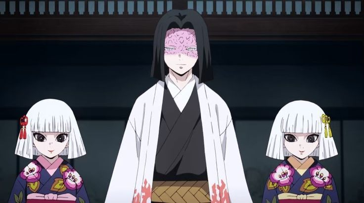

Nichika Ubuyashiki (産屋敷 にちか Ubuyashiki Nichika) is the second oldest daughter of Kagaya Ubuyashiki.
Like the rest of her family, Nichika had large eyes with pale skin. She wore her short, white hair in a blunt bob with a fringe.
Nichika wore a dark blue Hōmongi kimono with purple flowers as its pattern and a maroon obi with a cream yellow obiage and juban under everything. On the left side of her hair, she donned a yellow ribbon.
Not much was known about her personality, but she does show a sense of loyalty for dying along with her twin sister when their father sacrificed himself to defeat Muzan.
Nichika was born into the family of Kagaya and Amane Ubuyashiki along with quintuplets siblings Hinaki, Kiriya, Kuina and Kanata and is one of the eldest daughters in the family, she stayed by his side and died with him with her sister Hinaki.
